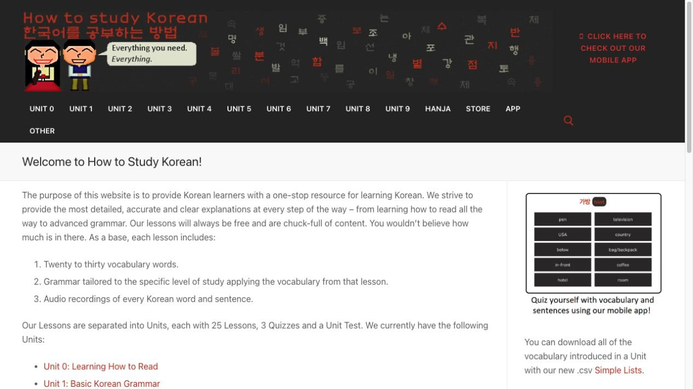

Korean learning tools for your study routine.
Choose Korean learning tools around the step you need next: understanding the writing system, building sentence patterns, recognizing spoken phrases, or reading with enough support to keep going. A grammar course and a regular source of listening can play different roles in the same routine.
A practical place to start
How to Study Korean provides lessons in sequence. Talk To Me In Korean offers structured study with its own access conditions. StoryKorean is a different kind of supplement: choose a story and notice how familiar grammar appears in a longer passage.
Three different starting points
Filter Korean resources
How to Study Korean
Follow Korean grammar lesson by lesson
A structured Korean course from learning to read through advanced grammar. Lessons include explanations and vocabulary, with additional audio, dictation, and study materials.
Try this: Read one lesson and create your own examples before moving to the next unit.

Talk To Me In Korean
Build a Korean routine with structured lessons
Korean study resources covering grammar, expressions, and listening. The official platform brings courses and study products together with its public teaching channels.
Try this: Choose one course level and pair a lesson with a short listening session.
StoryKorean
Read Korean through traditional stories
Korean stories are adapted and translated for learners, with beginner and intermediate selections on the homepage. Short plots make it easier to keep reading and meet vocabulary again in a memorable context.
Try this: Read one paragraph without translating, check the support text, and summarize it in Korean.
These are editorial study suggestions. The directory includes access notes; plans, accounts, and paid extras vary by provider.
Korean resource collection
20 resources associated with learning Korean. Open an entry for its introduction, practice suggestion, and official link.
- 90 Day Korean
Follow a structured route into Korean conversation
- Choisusu’s Korean Podcast
Listen to everyday Korean in short topic episodes
- Easy Languages
Explore language channels through everyday life
- GO! Billy Korean
Study Korean with clear, topic-by-topic explanations
- How to Study Korean
Follow Korean grammar lesson by lesson
- Key to Korean
Look up a grammar pattern or organize a study challenge
- Korean Topik
Study Korean writing examples and exam material
- Korean Wiki Project
Explore a community-built Korean reference
- Korean-English Learners’ Dictionary
Choose a Korean word with its meaning in context
- KoreanClass101
Learn Korean through short audio dialogues
- LangCorrect
Write and exchange corrections
- LearnKorean24
Build the basics with lessons and worksheets
- LingQ
Keep reading, listening, and saving words in context
- Mirinae
Make sense of Korean sentences
- Nuri King Sejong Institute
Find Korean learning materials from King Sejong Institute
- Speechling
Listen, record, compare, repeat
- StoryKorean
Read Korean through traditional stories
- Talk To Me In Korean
Build a Korean routine with structured lessons
- TOPIK Guide
Practise Korean with an exam plan
- YouGlish
Hear a phrase in real-world video